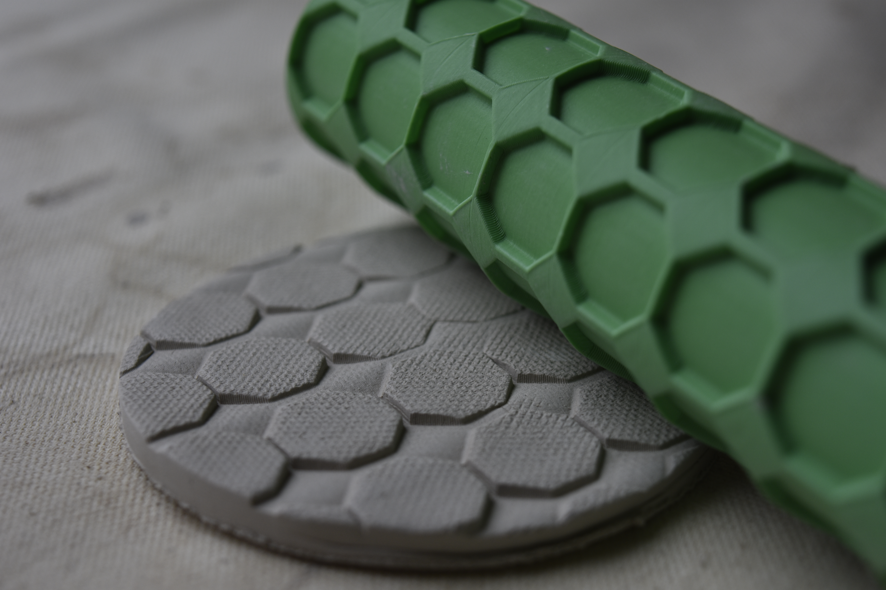
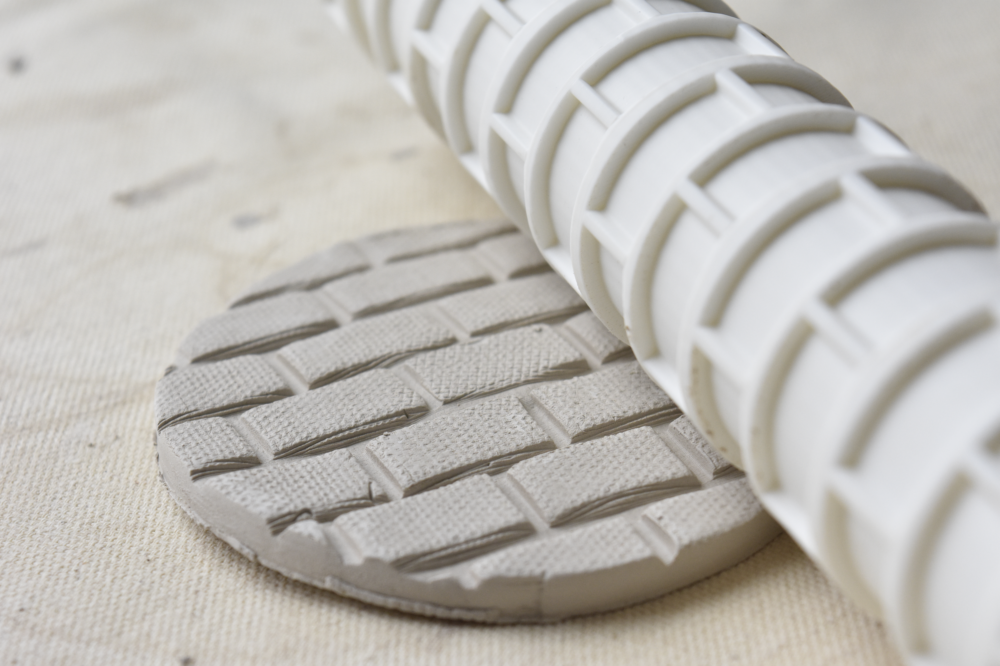
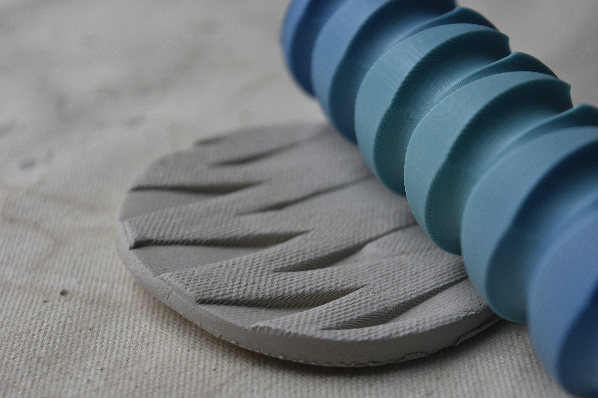

The Engineer & The Artist.
Where robotics precision meets ceramic tradition.
The Origin Story

Thomas Carleton
I am a robotics student and CAD designer applying engineering principles to the messy world of clay. Through courses like IED (Introduction to Engineering Design), I learned that the best tools are the ones built for a specific purpose.
The Spark: The Chop Lab started in the studio. My mother is a potter who struggled with generic stamps—they were too shallow, stuck to the clay, or were uncomfortable to hold. I realized I could use Fusion 360 and 3D printing to solve this.
Today, every tool is beta-tested by her before it ever makes it to the shop.
The Lab
Fusion 360 Design
We don't just "resize" images. We rebuild them using parametric modeling. This allows for rapid adjustments and mathematical precision, ensuring your logo looks exactly the way you want it.
Bambu Lab A1
Our manufacturing engine. Chosen for its incredible speed, reliability, and precision, allowing us to create multi-colored handles that stand out in a messy studio.
Material Science
We print exclusively in PLA Matte. Unlike glossy plastics, the matte finish releases moist clay cleanly without sticking, while offering a superior grip texture.

Selected Works

The "Red Panda"
The Challenge: Incorporate the letters "FC" naturally into the ears of an illustration.
Variable-height engineering prevents clay trapping.

Geometric Fidelity
The Hex-Lattice. High-relief geometric impressions that remain crisp even through glazing.

Architectural Masonry
The Mason. Precisely spaced mortar lines engineered for a staggered brickwork finish.

The Spiral Torqe
Torqe Profile. A continuous high-energy spiral cut designed for large-surface texturing.